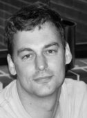
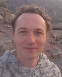

Authors
The authors of MrBayes listed in alphabetical order:
Chi Zhang
is an Associate Professor at the Institute of Vertebrate Paleontology
and Paleoanthropology, Chinese Academy of Sciences. His
research interests is applying Bayesian statistics in molecular
evolution and genomics, to infer evolutionary histories, divergence
times, and diversification patterns, and evaluating the properties
and performance of the methods using biological data and
simulations.
John
Huelsenbeck is Professor the at the Center for Theoretical Evolutionary
Genomics, University of California, Berkelely. He is interested
in theoretical phylogenetics, particularly Bayesian estimation of
phylogeny, and in the genetics of adaptation.
 Paul van der
Mark is the director of the FSU Research Computing Center at
Florida State University. He is
interested in computational biology and parallel computing.
 Fredrik Ronquist is a Professor in the Dept. of
Bioinformatics and Genetics at the Swedish Museum of Natural History. His
research interests include computational Bayesian phylogenetics,
hymenopteran systematics and evolution, and biodiversity
informatics. In addition to the MrBayes project, Fredrik is also
involved in the MorphBank
project, the Swedish
Taxonomy Initiative and the DINA project.
Fredrik Ronquist is a Professor in the Dept. of
Bioinformatics and Genetics at the Swedish Museum of Natural History. His
research interests include computational Bayesian phylogenetics,
hymenopteran systematics and evolution, and biodiversity
informatics. In addition to the MrBayes project, Fredrik is also
involved in the MorphBank
project, the Swedish
Taxonomy Initiative and the DINA project.

Maxim Teslenko is a senior researcher at the
Ericsson
Research. He is interested in computational biology, artificial
intelligence, hardware and software prototyping and various aspects
of electronic system design such as logic syntheses, formal
verification, design of fault tolerant systems.